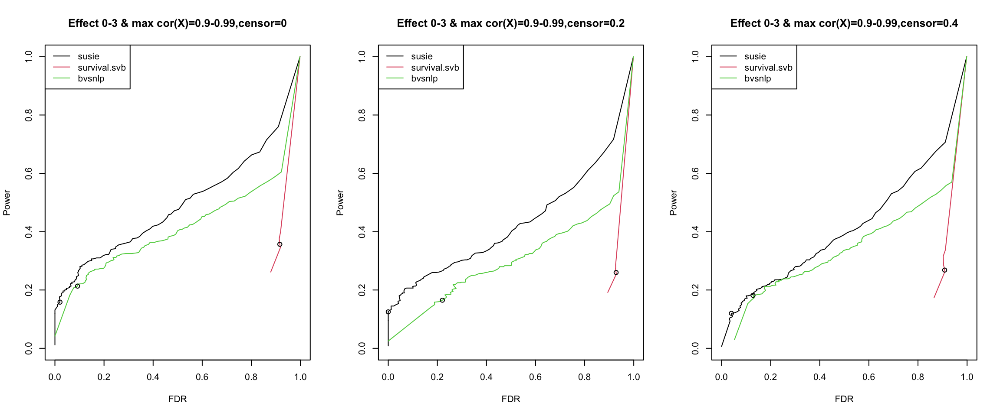
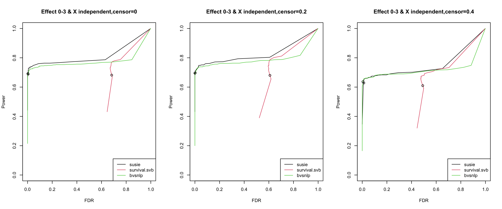

Power vs. fdr
Yunqi Yang
4/17/2023
Last updated: 2023-04-20
Checks: 7 0
Knit directory: survival-susie/
This reproducible R Markdown analysis was created with workflowr (version 1.6.2). The Checks tab describes the reproducibility checks that were applied when the results were created. The Past versions tab lists the development history.
Great! Since the R Markdown file has been committed to the Git repository, you know the exact version of the code that produced these results.
Great job! The global environment was empty. Objects defined in the global environment can affect the analysis in your R Markdown file in unknown ways. For reproduciblity it’s best to always run the code in an empty environment.
The command set.seed(20230201) was run prior to running the code in the R Markdown file. Setting a seed ensures that any results that rely on randomness, e.g. subsampling or permutations, are reproducible.
Great job! Recording the operating system, R version, and package versions is critical for reproducibility.
Nice! There were no cached chunks for this analysis, so you can be confident that you successfully produced the results during this run.
Great job! Using relative paths to the files within your workflowr project makes it easier to run your code on other machines.
Great! You are using Git for version control. Tracking code development and connecting the code version to the results is critical for reproducibility.
The results in this page were generated with repository version 9281ba3. See the Past versions tab to see a history of the changes made to the R Markdown and HTML files.
Note that you need to be careful to ensure that all relevant files for the analysis have been committed to Git prior to generating the results (you can use wflow_publish or wflow_git_commit). workflowr only checks the R Markdown file, but you know if there are other scripts or data files that it depends on. Below is the status of the Git repository when the results were generated:
Ignored files:
Ignored: .DS_Store
Ignored: .Rhistory
Ignored: .Rproj.user/
Ignored: analysis/.DS_Store
Ignored: analysis/.RData
Ignored: analysis/.Rhistory
Ignored: data/.DS_Store
Untracked files:
Untracked: analysis/ibss_null_model.Rmd
Unstaged changes:
Modified: analysis/check_coxph_fit.Rmd
Modified: analysis/compare_power_fdr.Rmd
Deleted: analysis/null_model_demo.Rmd
Modified: analysis/null_model_zscore.Rmd
Deleted: analysis/one_predictor_investigation.Rmd
Deleted: analysis/ser_survival.Rmd
Modified: analysis/sim_survival_with_censoring.Rmd
Modified: analysis/susie_poor_performance_example.Rmd
Modified: code/VI_exponential.R
Note that any generated files, e.g. HTML, png, CSS, etc., are not included in this status report because it is ok for generated content to have uncommitted changes.
These are the previous versions of the repository in which changes were made to the R Markdown (analysis/power_fdr2.Rmd) and HTML (docs/power_fdr2.html) files. If you’ve configured a remote Git repository (see ?wflow_git_remote), click on the hyperlinks in the table below to view the files as they were in that past version.
| File | Version | Author | Date | Message |
|---|---|---|---|---|
| Rmd | 9281ba3 | yunqiyang0215 | 2023-04-20 | wflow_publish("analysis/power_fdr2.Rmd") |
| html | a254370 | yunqiyang0215 | 2023-04-20 | Build site. |
| Rmd | cf52001 | yunqiyang0215 | 2023-04-20 | wflow_publish("analysis/power_fdr2.Rmd") |
| html | 8d772ea | yunqiyang0215 | 2023-04-20 | Build site. |
| Rmd | c92b497 | yunqiyang0215 | 2023-04-20 | wflow_publish("analysis/power_fdr2.Rmd") |
| html | e8d8a85 | yunqiyang0215 | 2023-04-20 | Build site. |
| Rmd | 4335c39 | yunqiyang0215 | 2023-04-20 | wflow_publish("analysis/power_fdr2.Rmd") |
| html | e7b734d | yunqiyang0215 | 2023-04-20 | Build site. |
| Rmd | 036402b | yunqiyang0215 | 2023-04-20 | wflow_publish("analysis/power_fdr2.Rmd") |
| html | a25c7b0 | yunqiyang0215 | 2023-04-20 | Build site. |
| Rmd | 8d445e6 | yunqiyang0215 | 2023-04-20 | wflow_publish("analysis/power_fdr2.Rmd") |
| html | 904f196 | yunqiyang0215 | 2023-04-17 | Build site. |
| Rmd | 8c59901 | yunqiyang0215 | 2023-04-17 | wflow_publish("analysis/power_fdr2.Rmd") |
| html | ba4a07c | yunqiyang0215 | 2023-04-17 | Build site. |
| Rmd | f06a979 | yunqiyang0215 | 2023-04-17 | wflow_publish("analysis/power_fdr2.Rmd") |
Description:
New simulation results, comparing power vs. FDR across 3 methods. I vary the threshold for claiming effect variables based on marginal PIP value.
Difference between old and new simulation:
New simulation removed SNPs with MAF < 5%.
Added the null data, no effect variable.
Added censoring to data simulation.
Force the effect variable not to be the first varaible.
Added the procedure for estimating prior variance.
Other simulation settings, see here: https://yunqiyang0215.github.io/survival-susie/compare_pip.html
Conclusion:
When X are highly correlated, susie performs best.
When X are independent, and without null model data, all methods are similar.
survival.svb and bvsnlp doesn’t perform well after adding data from null model.
When censoring level = 0.4, susie performance starts to get worse.
calculate_tpr_vs_fdr <- function(pip, is_effect, ts){
res <- matrix(NA, nrow = length(ts), ncol = 2)
colnames(res) = c("tpr", "fdr")
for (i in 1:length(ts)){
pred_pos = pip >= ts[i]
tp = pip >= ts[i] & is_effect == 1
fp = pip >= ts[i] & is_effect == 0
tpr = sum(tp)/sum(is_effect)
fdr = sum(fp)/sum(pred_pos)
res[i, ] = c(tpr, fdr)
}
return(res)
}susie = readRDS("./data/dsc2/susie.rds")
survsvb = readRDS("./data/dsc2/survsvb.rds")
bvsnlp = readRDS("./data/dsc2/bvsnlp.rds")names(susie)
# [1] "DSC" "simulate.cor_type" "simulate.num_effect"
# [4] "simulate.censor_lvl" "simulate.effect_indx" "simulate.b"
# [7] "simulate.is_effect" "susie.effect_estimate" "susie.pip"1. Results using real correlation structure from data
par(mfrow = c(1,3))
censor_lvl = c(0, 0.2, 0.4)
for (i in 1:3){
indx = which(susie$simulate.cor_type == "real" & susie$simulate.censor_lvl == censor_lvl[i])
pip.susie = unlist(lapply(indx, function(x) susie$susie.pip[[x]]))
pip.survsvb = unlist(lapply(indx, function(x) survsvb$survivalsvb.pip[[x]]))
pip.bvsnlp = unlist(lapply(indx, function(x) bvsnlp$bvsnlp.pip[[x]]))
is_effect = unlist(lapply(indx, function(x) susie$simulate.is_effect[[x]]))
ts = seq(from = 0, to = 1, by = 0.01)
res.susie = calculate_tpr_vs_fdr(pip.susie, is_effect, ts)
res.svb = calculate_tpr_vs_fdr(pip.survsvb, is_effect, ts)
res.bvsnlp = calculate_tpr_vs_fdr(pip.bvsnlp, is_effect, ts)
plot(res.susie[,2], res.susie[,1], type = "l", xlim = c(0,1), ylim = c(0, 1), xlab = "FDR", ylab = "Power",
main = paste0("Effect 0-3 & max cor(X)=0.9-0.99", ",censor=", censor_lvl[i]))
lines(res.svb[,2], res.svb[,1], type = "l", col = 2)
lines(res.bvsnlp[,2], res.bvsnlp[,1], type = "l", col = 3)
points(res.susie[96,2], res.susie[96, 1])
points(res.svb[96,2], res.svb[96, 1])
points(res.bvsnlp[96,2], res.bvsnlp[96, 1])
legend("topleft", legend = c("susie", "survival.svb", "bvsnlp"), col = c(1,2,3), lty = 1)
}
The dots indicate PIP threshold = 0.95
2. Results using independent X, without data from null model.
par(mfrow = c(1,3))
censor_lvl = c(0, 0.2, 0.4)
for (i in 1:3){
indx = which(susie$simulate.cor_type == "independent" & susie$simulate.censor_lvl == censor_lvl[i] & susie$simulate.num_effect != 0)
pip.susie = unlist(lapply(indx, function(x) susie$susie.pip[[x]]))
pip.survsvb = unlist(lapply(indx, function(x) survsvb$survivalsvb.pip[[x]]))
pip.bvsnlp = unlist(lapply(indx, function(x) bvsnlp$bvsnlp.pip[[x]]))
is_effect = unlist(lapply(indx, function(x) susie$simulate.is_effect[[x]]))
ts = seq(from = 0, to = 1, by = 0.01)
res.susie = calculate_tpr_vs_fdr(pip.susie, is_effect, ts)
res.svb = calculate_tpr_vs_fdr(pip.survsvb, is_effect, ts)
res.bvsnlp = calculate_tpr_vs_fdr(pip.bvsnlp, is_effect, ts)
plot(res.susie[,2], res.susie[,1], type = "l", xlim = c(0, 0.1), ylim = c(0, 1), xlab = "FDR", ylab = "Power",
main = paste0("Effect 1-3 & X independent", ",censor=", censor_lvl[i]))
lines(res.svb[,2], res.svb[,1], type = "l", col = 2)
lines(res.bvsnlp[,2], res.bvsnlp[,1], type = "l", col = 3)
points(res.susie[96,2], res.susie[96, 1])
points(res.svb[96,2], res.svb[96, 1])
points(res.bvsnlp[96,2], res.bvsnlp[96, 1])
legend("bottomright", legend = c("susie", "survival.svb", "bvsnlp"), col = c(1,2,3), lty = 1)
}
The dots indicate PIP threshold = 0.95.
3. Results using independent X, with data from null model.
par(mfrow = c(1,3))
censor_lvl = c(0, 0.2, 0.4)
for (i in 1:3){
indx = which(susie$simulate.cor_type == "independent" & susie$simulate.censor_lvl == censor_lvl[i])
pip.susie = unlist(lapply(indx, function(x) susie$susie.pip[[x]]))
pip.survsvb = unlist(lapply(indx, function(x) survsvb$survivalsvb.pip[[x]]))
pip.bvsnlp = unlist(lapply(indx, function(x) bvsnlp$bvsnlp.pip[[x]]))
is_effect = unlist(lapply(indx, function(x) susie$simulate.is_effect[[x]]))
ts = seq(from = 0, to = 1, by = 0.01)
res.susie = calculate_tpr_vs_fdr(pip.susie, is_effect, ts)
res.svb = calculate_tpr_vs_fdr(pip.survsvb, is_effect, ts)
res.bvsnlp = calculate_tpr_vs_fdr(pip.bvsnlp, is_effect, ts)
plot(res.susie[,2], res.susie[,1], type = "l", xlim = c(0, 1), ylim = c(0, 1), xlab = "FDR", ylab = "Power",
main = paste0("Effect 0-3 & X independent", ",censor=", censor_lvl[i]))
lines(res.svb[,2], res.svb[,1], type = "l", col = 2)
lines(res.bvsnlp[,2], res.bvsnlp[,1], type = "l", col = 3)
points(res.susie[96,2], res.susie[96, 1])
points(res.svb[96,2], res.svb[96, 1])
points(res.bvsnlp[96,2], res.bvsnlp[96, 1])
legend("bottomright", legend = c("susie", "survival.svb", "bvsnlp"), col = c(1,2,3), lty = 1)
}
The dots indicate PIP threshold = 0.95.
par(mfrow = c(1,3))
censor_lvl = c(0, 0.2, 0.4)
for (i in 1:3){
indx = which(susie$simulate.cor_type == "independent" & susie$simulate.censor_lvl == censor_lvl[i])
pip.susie = unlist(lapply(indx, function(x) susie$susie.pip[[x]]))
pip.survsvb = unlist(lapply(indx, function(x) survsvb$survivalsvb.pip[[x]]))
pip.bvsnlp = unlist(lapply(indx, function(x) bvsnlp$bvsnlp.pip[[x]]))
is_effect = unlist(lapply(indx, function(x) susie$simulate.is_effect[[x]]))
ts = seq(from = 0, to = 1, by = 0.01)
res.susie = calculate_tpr_vs_fdr(pip.susie, is_effect, ts)
res.svb = calculate_tpr_vs_fdr(pip.survsvb, is_effect, ts)
res.bvsnlp = calculate_tpr_vs_fdr(pip.bvsnlp, is_effect, ts)
plot(res.susie[,2], res.susie[,1], type = "l", xlim = c(0, 0.1), ylim = c(0, 1), xlab = "FDR", ylab = "Power",
main = paste0("Effect 0-3 & X independent", ",censor=", censor_lvl[i]))
lines(res.svb[,2], res.svb[,1], type = "l", col = 2)
lines(res.bvsnlp[,2], res.bvsnlp[,1], type = "l", col = 3)
points(res.susie[96,2], res.susie[96, 1])
points(res.svb[96,2], res.svb[96, 1])
points(res.bvsnlp[96,2], res.bvsnlp[96, 1])
legend("bottomright", legend = c("susie", "survival.svb", "bvsnlp"), col = c(1,2,3), lty = 1)
}
4. PIP histogram of survival.svb
4.1 Under real correlation The null data contains 300 replicates, the non-null data has 900 replicates. On average, the non-null data contains 2 effects per data.
indx1 = which(survsvb$simulate.cor_type == "real" & survsvb$simulate.num_effect == 0)
pip1 = unlist(lapply(indx1, function(x) survsvb$survivalsvb.pip[[x]]))
sum(pip1 > 0.95)
length(indx1)
indx2 = which(survsvb$simulate.cor_type == "real" & survsvb$simulate.num_effect != 0)
pip2 = unlist(lapply(indx2, function(x) survsvb$survivalsvb.pip[[x]]))
sum(pip2 > 0.95)
length(indx2)
# [1] 2164
# [1] 300
# [1] 4323
# [1] 900par(mfrow = c(1,2))
hist(pip1, xlab = "pip", main = "Null data: X high correlation")
hist(pip2, xlab = "pip", main = "Non-null data: X high correlation")
| Version | Author | Date |
|---|---|---|
| a25c7b0 | yunqiyang0215 | 2023-04-20 |
4.2 Under independent correlation The null data contains 300 replicates, the non-null data has 900 replicates. On average, the non-null data contains 2 effects per data.
indx1 = which(survsvb$simulate.cor_type == "independent" & survsvb$simulate.num_effect == 0)
pip1 = unlist(lapply(indx1, function(x) survsvb$survivalsvb.pip[[x]]))
sum(pip1 > 0.95)
length(indx1)
indx2 = which(survsvb$simulate.cor_type == "independent" & survsvb$simulate.num_effect != 0)
pip2 = unlist(lapply(indx2, function(x) survsvb$survivalsvb.pip[[x]]))
sum(pip2 > 0.95)
length(indx2)
# [1] 1868
# [1] 300
# [1] 1183
# [1] 900par(mfrow = c(1,2))
hist(pip1, xlab = "pip", main = "Null data: X independent")
hist(pip2, xlab = "pip", main = "Non-null data: X independent")
| Version | Author | Date |
|---|---|---|
| a25c7b0 | yunqiyang0215 | 2023-04-20 |
5. PIP histogram of susie
4.1 Under real correlation The null data contains 300 replicates, the non-null data has 900 replicates. On average, the non-null data contains 2 effects per data.
indx1 = which(susie$simulate.cor_type == "real" & susie$simulate.num_effect == 0)
pip1 = unlist(lapply(indx1, function(x) susie$susie.pip[[x]]))
sum(pip1 > 0.95)
length(indx1)
indx2 = which(susie$simulate.cor_type == "real" & susie$simulate.num_effect != 0)
pip2 = unlist(lapply(indx2, function(x) susie$susie.pip[[x]]))
sum(pip2 > 0.95)
length(indx2)
# [1] 0
# [1] 300
# [1] 247
# [1] 900par(mfrow = c(1,2))
hist(pip1, probability = TRUE, xlab = "pip", main = "Null data: X high correlation")
hist(pip2, probability = TRUE, xlab = "pip", main = "Non-null data: X high correlation")
| Version | Author | Date |
|---|---|---|
| 8d772ea | yunqiyang0215 | 2023-04-20 |
4.2 Under independent correlation The null data contains 300 replicates, the non-null data has 900 replicates. On average, the non-null data contains 2 effects per data.
indx1 = which(susie$simulate.cor_type == "independent" & susie$simulate.num_effect == 0)
pip1 = unlist(lapply(indx1, function(x) susie$susie.pip[[x]]))
sum(pip1 > 0.95)
length(indx1)
indx2 = which(susie$simulate.cor_type == "independent" & susie$simulate.num_effect != 0)
pip2 = unlist(lapply(indx2, function(x) susie$susie.pip[[x]]))
sum(pip2 > 0.95)
length(indx2)
# [1] 0
# [1] 300
# [1] 1215
# [1] 900par(mfrow = c(1,2))
hist(pip1, probability = TRUE, xlab = "pip", main = "Null data: X high correlation")
hist(pip2, probability = TRUE, xlab = "pip", main = "Non-null data: X high correlation")
| Version | Author | Date |
|---|---|---|
| 8d772ea | yunqiyang0215 | 2023-04-20 |
sessionInfo()
# R version 4.1.1 (2021-08-10)
# Platform: x86_64-apple-darwin20.6.0 (64-bit)
# Running under: macOS Monterey 12.0.1
#
# Matrix products: default
# BLAS: /usr/local/Cellar/openblas/0.3.18/lib/libopenblasp-r0.3.18.dylib
# LAPACK: /usr/local/Cellar/r/4.1.1_1/lib/R/lib/libRlapack.dylib
#
# locale:
# [1] en_US.UTF-8/en_US.UTF-8/en_US.UTF-8/C/en_US.UTF-8/en_US.UTF-8
#
# attached base packages:
# [1] stats graphics grDevices utils datasets methods base
#
# other attached packages:
# [1] workflowr_1.6.2
#
# loaded via a namespace (and not attached):
# [1] Rcpp_1.0.8.3 highr_0.9 pillar_1.6.4 compiler_4.1.1
# [5] bslib_0.4.1 later_1.3.0 jquerylib_0.1.4 git2r_0.28.0
# [9] tools_4.1.1 digest_0.6.28 jsonlite_1.7.2 evaluate_0.14
# [13] lifecycle_1.0.1 tibble_3.1.5 pkgconfig_2.0.3 rlang_1.0.6
# [17] cli_3.1.0 rstudioapi_0.13 yaml_2.2.1 xfun_0.27
# [21] fastmap_1.1.0 stringr_1.4.0 knitr_1.36 fs_1.5.0
# [25] vctrs_0.3.8 sass_0.4.4 rprojroot_2.0.2 glue_1.4.2
# [29] R6_2.5.1 fansi_0.5.0 rmarkdown_2.11 magrittr_2.0.1
# [33] whisker_0.4 promises_1.2.0.1 ellipsis_0.3.2 htmltools_0.5.2
# [37] httpuv_1.6.3 utf8_1.2.2 stringi_1.7.5 cachem_1.0.6
# [41] crayon_1.4.1